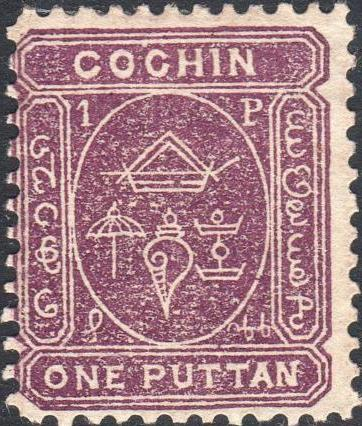
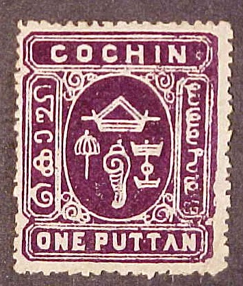
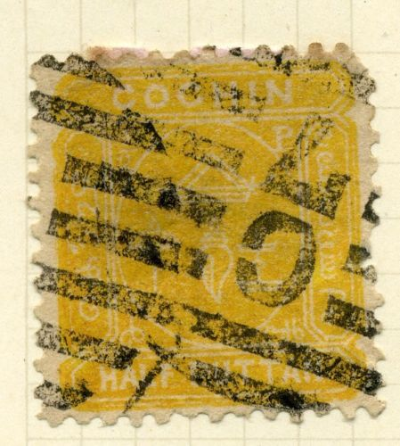
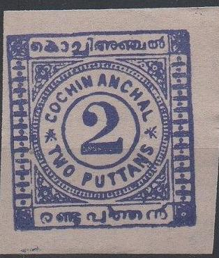
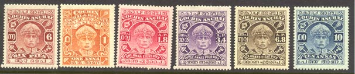
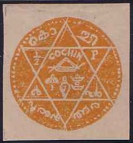

{kind=link}

Note: on my website many of the
pictures can not be seen! They are of course present in the
catalogue;
contact me if you want to purchase it.
1/2 p yellow 1 p lilac 2 p violet
These stamps exist with sheet watermark or watermark 'umbrella' (1897).
Value of the stamps |
|||
vc = very common c = common * = not so common ** = uncommon |
*** = very uncommon R = rare RR = very rare RRR = extremely rare |
||
| Value | Unused | Used | Remarks |
| 1/2 p | ** | * | |
| 1 p | ** | ** | |
| 2 p | *** | * | |

Larger sized stamp (fiscal stamp)
A larger sized 1 p stamp exists in a slightly different design (for example the word "COCHIN" is broader than the central ellipse). This stamp is a fiscal stamp, it is not clear if it was ever used for postal purposes.
Full sheet with 2 p stamps.

Typical cancel.
Crude modern forgery.
3 pies blue 1/2 put green 1 put red (value in ellipse) 2 put lilac Surcharged (1909)
(Reduced size)
'2' on 3 pies lilac
A rare second type of this overprint exists (RR), also inverted overprints and tete beche stamps are known (RR).
Value of the stamps |
|||
vc = very common c = common * = not so common ** = uncommon |
*** = very uncommon R = rare RR = very rare RRR = extremely rare |
||
| Value | Unused | Used | Remarks |
| 3 pies | * | * | |
| 1/2 put | * | * | |
| 1 putt | * | * | |
| 2 putt | ** | * | |
| 2 on 3 pies | c | c | |
Typical cancels, reduced sizes.
Forgeries:

A 1/2 p forgery and two different kind of modern forgeries of the
2 p value.
I've seen some 2 p imperforate forgeries (wrong color), here with a whole bunch of forgeries of other Indian States, presumably made by the same forger:

A whole bunch of forgeries of different states, all made by the
same forger, I presume.
2 p brown 3 p blue 4 p green 9 p red 1 a brown 1 1/2 a lilac 2 a grey 3 a red Surcharged
'2 Two pies' (2 types) on 3 p blue (1922) With overprint "On C G S"
3 p blue (different overprint in red, 1921) 4 p green 9 p red 1 1/2 a lilac 2 a grey 3 a red 6 a violet 12 a blue 1 1/2 R green With overprint "On C G S" and further surcharged (1922) 8 p on 9 p red 10 p on 9 p red
2 p brown 4 p green 6 p brown 8 p black 9 p red 10 p blue 1 a brown 1 1/2 a lilac 2 a grey 2 1/2 a green 3 a red With overprint "On C G S"
4 p green 6 p brown 8 p black 9 p red 10 p blue 1 1/2 a lilac 2 a grey 2 1/2 a green 3 a red 6 a violet With overprint "On C G S" and further surcharged (1922)
8 p on 9 p red 10 p on 9 p red With overprint "ANCHAL & REVENUE" 'ONE ANNA' on 2 1/2 a green (1928)
(Issued around 1933)

(Issued around 1943)
(Issued around 1949)

{kind=link}
{kind=link}
{kind=link}
{kind=link}
{kind=link}